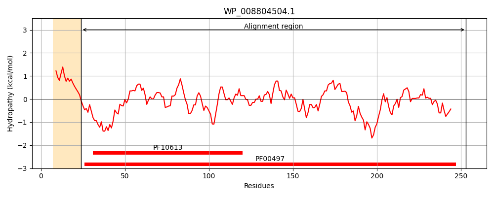
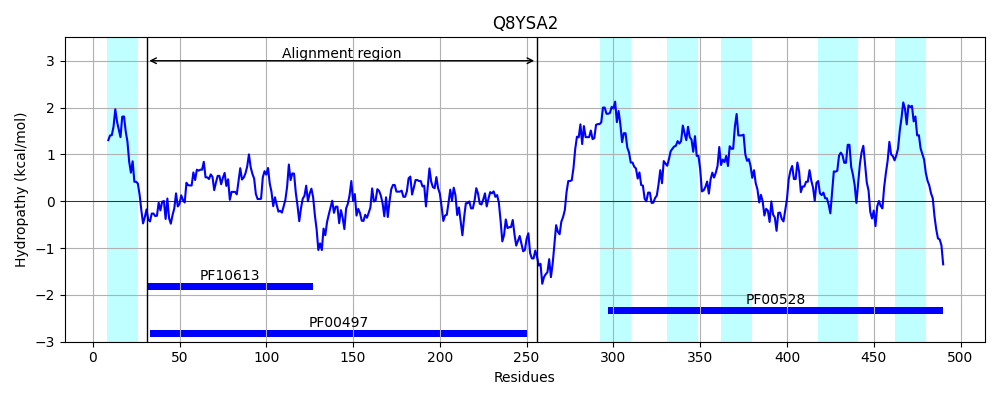
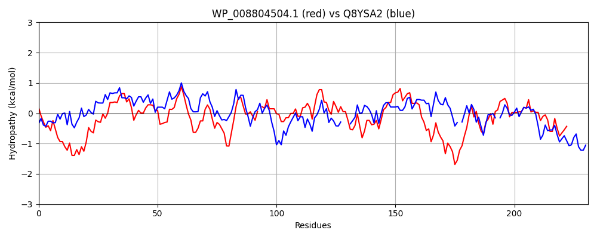

Hit Accession: Q8YSA2
Hit TCID: 3.A.1.3.17
Hit Description: gnl|BL_ORD_ID|17089 gnl|TC-DB|Q8YSA2|3.A.1.3.17 Glutamine-binding periplasmic protein of glutamine ABC transporter - Anabaena sp. (strain PCC 7120).
Mach Len: 231
e:0.000000
Query TMS Count : 1
Hit TMS Count: 6
TMS-Overlap Score: 0.650000
Predicted Substrates:CHEBI:25094;lysine, CHEBI:2643;arginine, CHEBI:5733;histidine
BLAST Alignment:
Score: 348 , Bit scores: 138 bits, E-value: 4.9e-38, Alignment length: 231, Percentage identity: 36
Query: 24 ETYTVGSGGTYRPFEFENSQKQLEGFDIDIIKAIAKAEGFDVKLVNTPWEGIFATLNTGDRDIIISGITITDKRKQMVDFSAPYFPAEQSIVV-AQDSQVDSLAALKNEKVGVVNSSTGDIVVSEVLGKNSTAIKRFDNTPLMLQELFEDGVSAAVGDVGVVKYYIKQHPEKQFKLVPDAKFERQYFGIAVAKGNSELLGKINAGLQKIVADGTYAKIYKTWFDDNVPTLP 253
+T + + + PFEF L+GF ID++ AIA A V + P++GI L + D IS ITIT +R + V FS PYF A +I + + + + +LKN+K+ V +TG + G I+ FD+ PL LQEL + V A + D V Y I + K+V + +Y+GIA A+ NS L IN GL +++ADG+Y++IY+ WF P+LP
Sbjct: 31 KTLRIATEPAFPPFEFTAQGGNLQGFSIDLMNAIASAANLKVNFQSLPFDGIIPALQSRTVDAAISSITITAERAETVAFSRPYFKAGLAIAIRSSNEDITGFDSLKNKKIAVQIGTTGAGKAKSIPG---AQIRSFDSAPLALQELLNNNVDAVINDAPVTLYAINTGNLQGIKVV-EKLLTEEYYGIATAQ-NSPYLALINDGLNRVLADGSYSQIYQKWFKVEPPSLP 256 | Protein Hydropathy Plots: |
|---|
|  |  |
Pairwise Alignment-Hydropathy Plot:
|
|---|
|  |